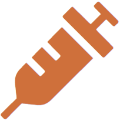
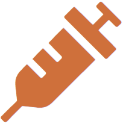

Signos compatibles con Covid-19
- Fiebre de 37.5° o más.
- Dolor de garganta.
- Tos y dificultad respiratoria
- Dolor de cabeza.
- Vómito y diarrea

¿Qué hacer?
Si diagnosticas más de dos síntomas, aisla de inmediato al paciente y procede a realizar cuanto antes el hisopado para confirmar o descartar COVID 19.

Curso online nuevo coronavirus OMS
Enfermedad por coronavirus (COVID-19): Accesibilidad y asignación de vacunas
Seguridad de las vacunas conttra el COVID-19 ‖ CDC
Luego de la vacunación ¿Qué síntomas se pueden presentar?
Lineamientos técnicos para la gestión de de residuos de vacunación - COVID-19.
Recomendaciones generales al tener contacto con las personas infectadas